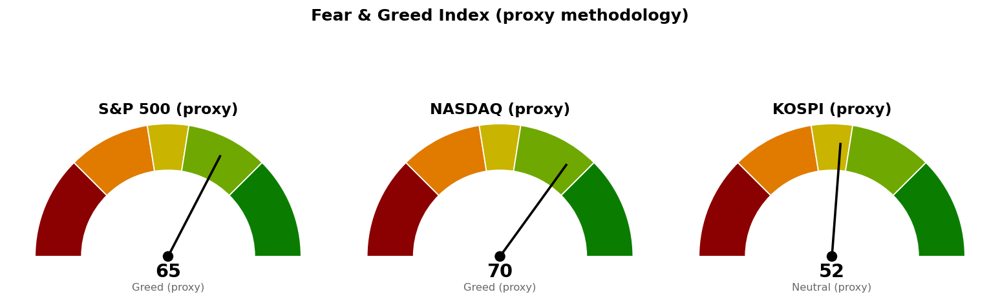

| 직전에 건 조건 | 판정 | 근거 |
|---|---|---|
| S&P 500 기준선 7,794 (종가 상회) | 미충족 · 진행 중 | 9/24 종가 7,704에 이어 9/25 장중 7,722로 72포인트(하루 평균 변동폭 65의 1.11배) 아래입니다 |
| S&P 500 다음 지지 7,653 (종가 하회) | 미충족 — 지켰습니다 | 9/25 저가 7,693으로 40포인트 위에서 멈췄습니다 |
| S&P 500 사다리 1차 7,653 (장중 터치) | 미충족 · 집행 없음 | 같은 이유입니다 |
| 나스닥 기준선 26,951 (종가 상회) | 아직 진행 중 | 장중 27,012로 61포인트 위에 있으나 확정 종가가 아닙니다. 자동 채점은 이 장중 값을 종가로 읽어 충족으로 적었고, 실제 판정은 9월 26일 05:00 마감으로 합니다 |
| 나스닥 다음 지지 26,680 (종가 하회) | 미충족 — 지켰습니다 | 9/25 저가 26,876으로 196포인트 위에서 멈췄습니다 |
| 나스닥 사다리 1차 26,680 (장중 터치) | 미충족 · 집행 없음 | 같은 이유입니다 |
| 코스피 기준선 7,054 (종가로 지킴) | 판정 불가 | 9/24·9/25 두 세션의 코스피 봉이 자료에 없습니다. 최신은 9/23 종가 7,081입니다 |
| 코스피 도착지 7,199 (고가 도달) | 판정 불가 | 같은 이유입니다 |
| 30년 금리 5.286% 아래 (종가) | 미충족 | 9/24 종가 5.461%에서 9/25 장중 5.520%로 0.059%포인트 더 올랐습니다 |
직전 브리핑이 다음 세션의 볼 것으로 적은 것은 "나스닥이 26,951을 종가로 넘는지"였고, 아직 진행 중입니다. "못 지키면 어디까지"는 이번에도 시험받지 않았습니다 — 미국 두 지수 모두 다음 지지 아래에서 마친 세션이 없습니다.
세 계획 모두 살아 있고 세 기준선은 한 자리도 옮기지 않았습니다. 옮긴 가격은 나스닥 도착지 하나이며(27,400 → 27,159), 9월 22일 봉이 자료에 들어오면서 90일 박스 상단이 26,951에서 27,118로 다시 계산됐고 그 27,118과 27,200 라운드가 겹치는 자리가 27,400보다 먼저 오기 때문입니다. 직전 브리핑도 27,400의 근거가 라운드 피겨 단독이라고 적어 두었습니다.
직전 브리핑에서 정정할 곳이 두 군데 있습니다. ① 나스닥이 9월 21일 종가 27,122로 기준선을 한 번 넘었다고 적었는데, 9월 22일 종가 27,244로 이틀 연속 넘은 뒤 9월 23일 종가 26,936으로 반납한 것이 맞습니다(9/22 봉이 당시 자료에 없었습니다). ② "오늘 한국 거래소가 열려 있고 삼성전자 거래량 20,864,376주"라고 적었는데, 그 거래량은 9월 23일 봉의 값이고 실시간 자료가 아니었습니다. 방향 판단은 두 건 모두 바뀌지 않습니다.
기준선까지는 남은 반나절로 닿지 않는 거리이며, 한 세션을 더 써야 합니다. 90일 박스는 7,282~7,798이고 박스 안쪽은 매집·분산 어느 쪽 우위도 판정되지 않았습니다.
기준선을 장중에 지나고 있으므로 판정은 오늘 마감 한 번으로 끝납니다. 9월 21일·22일에도 종가로 넘은 뒤 9월 23일 종가 26,936으로 반납했으므로, 마감 전에는 진입하지 않습니다. 도착지 27,159 위의 경로는 박스 밖이라 근거를 댈 수 없어 적지 않습니다.
기준선을 내주면 바로 아래는 6,996~7,025 구간(7회 반응 + 지지에서 저항으로 바뀐 자리)이고, 그 아래 6,892·6,853을 지나 6,830까지가 받칠 자리입니다. 6,830과 6,673 사이 157포인트(0.71배)에는 받칠 가격이 없습니다. 20일선이 9월 22일 봉이 들어오며 6,836에서 6,853으로, 50일선이 6,887에서 6,892로 다시 계산돼 50일선이 20일선 위로 올라왔습니다 — 계획 가격을 옮길 만한 폭은 아닙니다. 다음 한국 거래일은 9월 28일(월)이고, 그때 코스피 시가는 오늘 뉴욕 마감이 먼저 정하므로 코스피 단독 신호로 결론을 앞당기지 마십시오.
세 지수 회차를 전부 집행하면 계좌의 16%(22,320,000원 · S&P 500 6% · 나스닥 6% · 코스피 4%)가 지수 노출로 들어갑니다. 세 지수가 모두 취소선까지 밀려 정리하는 최악의 경우 계좌 대비 -0.24%(-331,000원)입니다. 갭으로 취소선을 건너뛰고 열리면 실제 손실은 이보다 커집니다.
| 지수 | 값 | 등락 | 고가 | 저가 |
|---|---|---|---|---|
| S&P 500 (9/25 장중) | 7,722 | +0.23% | 7,734 | 7,693 |
| 나스닥 종합 (9/25 장중) | 27,012 | +0.27% | 27,078 | 26,876 |
| 코스피 (9/23 종가) | 7,081 | +0.90% | 7,154 | 7,015 |
| 니케이 225 (9/25) | 66,366 | +1.30% | 66,410 | 65,640 |
미국 두 지수는 상승으로 열려 개장 두 시간 동안 폭을 넓힌 세션이며, 여기까지의 하루 폭은 S&P 500 41포인트(평균 65의 0.63배) · 나스닥 202포인트(317의 0.64배)입니다.
20일 초과수익이 플러스인 업종이 둘에서 셋으로 늘었고, 기술은 6.79에서 4.15로 앞섰던 폭을 줄였습니다. 하위권과 상위권의 간격이 전반적으로 좁혀진 하루이며, 미국 값은 장중이라 마감까지 더 움직입니다.
한국 섹터는 테마형 ETF 기준이라 미국 업종 ETF와 성격이 다르고, 두 블록의 막대 길이는 서로 견주지 않습니다. 한국 값 열한 개가 전부 직전 브리핑보다 정확히 1.01포인트씩 올랐고 순위는 한 칸도 바뀌지 않았습니다 — 9월 22일 봉이 들어오며 기준 지수의 20일 수익률이 그만큼 낮게 다시 계산된 결과이고, 섹터가 움직인 것이 아닙니다. 값 자체는 여전히 9월 23일까지입니다. 계좌의 반도체 8.02%와 AI전력 14.47%가 플러스인 두 축에 걸려 있습니다. 이번 브리핑에서는 종목 발굴을 돌리지 않았으므로 후보를 인용하지 않습니다.
| 항목 | 값 | 직전 대비 |
|---|---|---|
| 미국 경기선행지수 (2026년 8월) | 100.96 | 7월 100.89 대비 +0.06 · 직전 브리핑과 같은 값 |
| 한국 경기선행지수 (2026년 8월) | 102.87 | 7월 102.81 대비 +0.06 · 직전 브리핑과 같은 값 |
| 미 10년 명목금리 | 5.11% (9/23 확정) · 9/25 장중 지수 시세 5.213% | 확정치는 직전 브리핑과 같은 값 · 지수 시세는 9/24 5.162% 대비 +0.051%포인트 |
| 미 10년 기대물가 | 2.33% (9/24) | 9/23 2.35% 대비 -0.02%포인트 · 직전 브리핑과 같은 값 |
| 미 10년 실질금리 | 2.76% (9/23) | 9/22 2.63% 대비 +0.13%포인트 · 직전 브리핑과 같은 값 |
| 유가 (WTI) | 확정치 96.41달러 (9/22) · 최신 94.04달러 (9/25 장중 선물) | 선물 9/24 종가 94.61달러 대비 -0.60% |
| 달러지수 (광의) | 119.51 (9/18) | 9/17 119.35 대비 +0.16 · 직전 브리핑과 같은 값 |
| 변동성지수 (VIX) | 15.35 (9/25 장중) | 9/24 15.67 대비 -2.04% · 백분위 33.9 |
경기선행지수는 장기 평균을 100으로 놓고 경기 방향을 몇 달 앞서 보여주는 지표입니다(OECD 작성, 진폭조정 계열). 미국·한국 모두 8월치가 최신이고 새 발표가 없었으므로 값도 해석도 직전과 같습니다.
금리 분해에 쓸 새 값이 이번에는 없습니다 — 명목금리와 실질금리가 9월 23일자, 기대물가가 9월 24일자에서 멈춰 있어 직전 브리핑이 쓴 것과 같은 자료입니다. 장중 시세로 움직인 쪽은 10년 5.213%(+0.051%포인트) · 30년 5.520%(+0.059%포인트)로 둘 다 올랐고, VIX는 15.35로 내려 금리 상승과 변동성이 같은 방향으로 움직이지 않았습니다. 유가 선물은 -0.60%인데 기대물가는 갱신되지 않아 이번에는 대조할 수 없습니다.
1. BofA, 두 지표가 큰 위험회피 국면을 가리킨다 (MarketWatch, 9월 25일 12:52 UTC) 채권시장 불안과 금융주 약세가 겹치는 조합을 근거로 들었습니다. 금융(XLF)은 20일 초과수익 -5.61 · 5일 -3.25로 두 기준 모두 하위권이고, 30년 금리는 장중 5.520%로 신규 종목 편입 재개 조건에서 0.234%포인트 멀어져 있습니다. 이 브리핑이 기준선을 옮기지 않은 것과 별개로, 두 갈래 중 아래쪽(7,653 · 26,680)이 시험받을 재료입니다.
2. 워시 의장 체제에서 추가 인상 가능성이 남아 있다 (CNBC, 9월 25일 10:30 UTC) 정책 틀이 아직 정리되지 않았고 추가 인상이 배제되지 않았다는 내용입니다. 신규 종목 편입 재개를 30년 금리 하나로 판정하는 이유가 여기 있으며, 그 조건을 움직일 첫 예정 발표는 10월 28일 FOMC이고 그 전에 볼 물가 지표는 9월 30일 PCE와 10월 14일 CPI입니다.
3. 트럼프·시진핑 회담에서 AI가 주요 의제였다 (CNBC, 9월 25일 14:43 UTC) 직전 브리핑이 예고로 인용한 회담이 목요일에 실제로 열렸고 AI가 핵심 의제였다는 후속입니다. 반도체는 한국 20일 초과수익 8.58로 두 시장을 통틀어 가장 강한 축이고 계좌 비중이 8.02%이며, Alibaba (BABA) 0.86%도 같은 회담 결과에 걸려 있습니다. 결과물이 공개되면 두 테마가 같이 움직일 수 있습니다.
이번 수집에서는 279건을 받아 10건을 추렸습니다.

세 점수 모두 공식 CNN Fear & Greed 지수가 아니라 모멘텀·상대강도·변동성·안전자산 선호 네 항목으로 계산한 대용 지표입니다. 변동성 항목은 그 지수의 변동성이 자기 과거 3년 분포에서 차지하는 자리로 산출하며, 미국은 변동성지수 15.4가 백분위 33.9(표본 756일), 코스피는 내재변동성 지수가 없어 20일 실현변동성 연율화 31.4%가 백분위 70.9(표본 708일)입니다.
나스닥 네 항목은 모멘텀 67.8 · 상대강도 60.3 · 변동성 66.1 · 안전자산 선호 83.9이고, S&P 500은 63.3 · 55.1 · 66.1 · 74.5로 변동성 항목이 두 지수에 같은 값으로 들어갑니다. 코스피 52.4는 9월 23일까지의 자료로 계산된 값이며, 직전 53.7에서 내려온 것은 새 세션이 아니라 9월 22일 봉이 들어와 다시 계산된 결과입니다.
| 날짜 (한국시간) | 이벤트 | 확인할 것 |
|---|---|---|
| 9월 26일 05:00 | 뉴욕 정규장 마감 (미국 9/25) | 나스닥이 26,951을 종가로 넘는지 · S&P 500이 7,653 위에서 마치는지 · 30년 금리가 5.286% 아래로 내려오는지 |
| 9월 28일 09:00 | 한국 거래 재개 | 코스피가 7,054를 종가로 지키는지 · 빠진 두 세션이 자료에 들어오면 함께 판정합니다 |
| 9월 30일 | PCE 물가지수 · GDP | 연준이 보는 물가 지표 (발표 일정 확인됨) |
| 10월 2일 | 고용보고서 (비농업 고용 · 실업률) | 금리를 밀어 올린 지표 흐름이 이어지는지 |
| 10월 14일 | CPI | 10월 FOMC 직전 마지막 물가 지표 |
| 10월 21일 · 22일 | Netflix (NFLX) · LS ELECTRIC (010120.KS) 실적 | 보유 종목 중 가장 가까운 실적일 둘 |
| 10월 28일 | FOMC | 30년 금리 조건을 움직일 첫 예정 발표 |
9월 30일 PCE·GDP만 발표 일정 조회로 확인한 날짜이고, 나머지는 직전 브리핑이 적어 둔 일정을 그대로 옮긴 것입니다.
장부에 기록된 보유는 16종목이고 매도 기록은 없습니다. 계좌 평가액 139,498,400원 기준 투입 41.7% · 손절까지 남은 손실 합계 2.5%(한도 6%)이며, 한 종목 최대는 TIGER 미국배당다우존스 (458730.KS) 10.46%(한도 13%) · 테마 최대는 AI전력 14.47%(한도 35%)로 위반이 없습니다. 장기 보유 3.9%(LightPath (LPTH), Fluence Energy (FLNC))는 작동하는 손절이 없어 손실 합계에서 뺐습니다. 시장 국면은 코스피가 200일 이동평균 대비 +13.25%(9/23 기준), S&P 500이 +6.99%(9/24 종가 기준, 진행 중인 9/25 봉은 뺐습니다)로 두 시장 모두 신규 진입이 막히지 않은 상태입니다.
1. 신규 종목 편입 재개는 30년 금리 하나로 판정합니다. 뉴욕 마감 종가가 5.286% 아래면 그날부터 재개하고, 위에서 마치면 지수가 더 올라도 재개하지 않습니다. 9월 25일 장중 5.520%로 0.234%포인트 위입니다. 2. 매수 쪽 — 이번 세션 남은 시간에 닿을 수 있는 회차는 없습니다. S&P 500 1차 7,653은 현재가에서 69포인트(1.06배), 나스닥 1차 26,680은 332포인트(1.05배), 코스피 1차 6,702는 9/23 종가에서 379포인트(1.71배) 아래입니다. 세 회차 모두 장중 터치로만 집행하고, 취소선 7,517 · 25,967 · 6,600을 일봉 종가로 잃으면 남은 회차를 멈춥니다. 3. 나스닥 기준선을 장중에 지나고 있어도 지금 사지 않습니다. 판정은 일봉 종가이며, 9월 21일·22일에 종가로 넘고도 하루 만에 반납한 전례가 이 규칙을 만든 이유입니다. 4. Netflix (NFLX) 10주 · Bloom Energy (BE) 1주는 매수 계획 종료 — 새 리포트 대기이며 보유분은 그대로입니다. Netflix는 9월 23일 관망 종료 기준 72.11달러를 종가 71.36달러로, Bloom Energy는 9월 18일 270달러를 265.63달러로 내려왔습니다. 5. GE Vernova (GEV) 1주는 추가 매수 안 함 (보유분은 그대로). 9월 24일 종가 955.04달러로 회복선 952달러를 넘겼는데, 이 회복선은 손익비가 낮아 매수하지 않기로 한 계획의 재분석 가격입니다. 6. 매도 신호가 나왔는데 체결 기록이 없는 종목이 4개입니다 — USA Rare Earth (USAR) 6회, Netflix (NFLX) 2회, GE Vernova (GEV) 1회, Alibaba (BABA) 1회. 사실을 적을 뿐 매도를 권하는 것이 아닙니다. 7. 나머지 11종목은 조치가 없습니다. 목록 대조에서 어긋난 곳도 없습니다(보유 16종목 · 관심 1종목 GOOGL · 추적 0).
다음 세션에 볼 것 하나 — 오늘 뉴욕 마감에서 나스닥이 26,951을 종가로 넘는지입니다. 넘으면 도착지 27,159까지 147포인트를 보고, 종가로 되돌리면 이번 주에만 세 번째 반납이며 다음 확인 가격은 26,680입니다.
ATR(하루 평균 변동폭): 최근 14일 동안 하루에 오르내린 폭의 평균. · EMA(지수이동평균): 최근 가격에 더 무게를 준 평균 가격선. · RSI(상대강도지수): 최근 14일 오른 폭과 내린 폭의 비율을 0~100으로 나타낸 값. · 20일 초과수익: 최근 20거래일 수익률에서 기준 지수 수익률을 뺀 값. · VIX(변동성지수): S&P 500 옵션에 반영된 향후 30일 예상 변동폭. · 기대물가: 같은 만기 명목금리와 물가연동채 금리의 차이로 시장이 보는 평균 물가상승률. · 실질금리: 물가연동국채가 직접 주는 금리로, 명목금리에서 물가 상승분을 뺀 몫.
이 문서는 참고 정보이며 투자자문이 아닙니다. 모든 수치는 위에 적은 기준 시각의 시장 자료에서 가져온 것이고, 투자 판단과 그 결과에 대한 책임은 투자자 본인에게 있습니다.